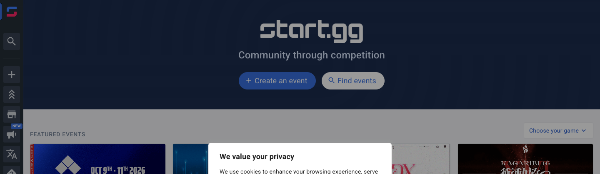

v22 · Как start.gg
Шапки сверху нет — узкая панель значков слева: бренд, поиск, 5 игр логотипами, внизу Расписание и Фэнтези. Подписи — по наведению.
Образец — шапка start.gg (скрин 15.10)

Наша шапка по этому образцу · десктоп 1440 · кликается: игры, разделы, фэнтези